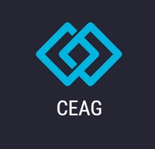

innovaciónes infinitas
CEAG
Nuestra misión es desarrollar soluciones de software innovadoras y de alta calidad que impulsen la transformación digital de nuestros clientes. Nos comprometemos a proporcionar productos y servicios tecnológicos que optimicen procesos, mejoren la eficiencia operativa y potencien el crecimiento de las empresas, brindando una experiencia excepcional y generando valor sostenible.
Nos visualizamos como líderes en el sector de desarrollo de software, reconocidos por nuestra excelencia técnica, creatividad y compromiso con la satisfacción del cliente. Buscamos ser referentes en la industria, impulsando la adopción de soluciones tecnológicas avanzadas y siendo pioneros en la aplicación de nuevas tecnologías. Nuestra visión es ser el socio preferido de las empresas en su viaje hacia la transformación digital, generando impacto positivo en sus operaciones y ayudándolas a alcanzar su máximo potencial.
Azul Marino: El azul marino es un color asociado con la confianza, la autoridad y la seriedad. Transmite una sensación de estabilidad y profesionalidad, lo que es adecuado para una empresa de software que busca generar confianza en sus clientes.
Azul Eléctrico: El azul eléctrico es un tono vibrante y enérgico. Este color evoca emociones como la innovación, la modernidad y la creatividad. Puede transmitir una sensación de dinamismo y originalidad, lo cual es beneficioso para una empresa de software que busca destacarse en el mercado.
Blanco: El blanco es un color asociado con la pureza, la simplicidad y la claridad.
https://goo.gl/maps/RG6oB9SCjLUFzrjW6
Scrum Master/Web Developer: Es un profesional con una amplia experiencia en el desarrollo web y un profundo conocimiento de la metodología ágil Scrum. Su rol principal es actuar como facilitador y líder del equipo de desarrollo, asegurando que se sigan los principios y prácticas de Scrum para lograr los objetivos del proyecto. Es responsable de garantizar que el equipo trabaje de manera colaborativa y eficiente, eliminando obstáculos y fomentando la comunicación y la transparencia. Además, el Scrum Master/Web Developer también participa activamente en el desarrollo del producto, aportando sus habilidades técnicas y conocimientos en la creación de soluciones web de alta calidad. Es un profesional organizado, orientado a los detalles y con habilidades de resolución de problemas, que guía al equipo hacia el éxito en la entrega del proyecto.
Desarrollador de Software: Es un profesional altamente capacitado y especializado en la creación y programación de software. Es experto en lenguajes de programación y frameworks, y tiene amplios conocimientos en diseño y arquitectura de software. Su principal responsabilidad es desarrollar y mantener el producto de software de la empresa, asegurándose de que cumpla con los estándares de calidad y funcionalidad. Es creativo, analítico y está constantemente actualizándose en las últimas tendencias tecnológicas para garantizar soluciones innovadoras y eficientes.
Marketing/Contador: El profesional de Marketing/Contador es un especialista en estrategias de marketing y análisis financiero. Su rol principal es desarrollar e implementar estrategias de marketing efectivas para promocionar el producto o servicio de la empresa. Además, se encarga de realizar análisis financieros, evaluar la rentabilidad de las iniciativas de marketing y gestionar el presupuesto asignado. Es responsable de identificar oportunidades de mercado, definir segmentos de clientes, realizar investigaciones de mercado y supervisar el desempeño de las campañas publicitarias. Asimismo, el Marketing/Contador se encarga de llevar a cabo un seguimiento financiero preciso, realizar pronósticos financieros y proporcionar informes detallados sobre el rendimiento económico del proyecto. Es un profesional creativo, analítico y orientado a los resultados, capaz de combinar el conocimiento financiero con las estrategias de marketing para lograr los objetivos de la empresa.